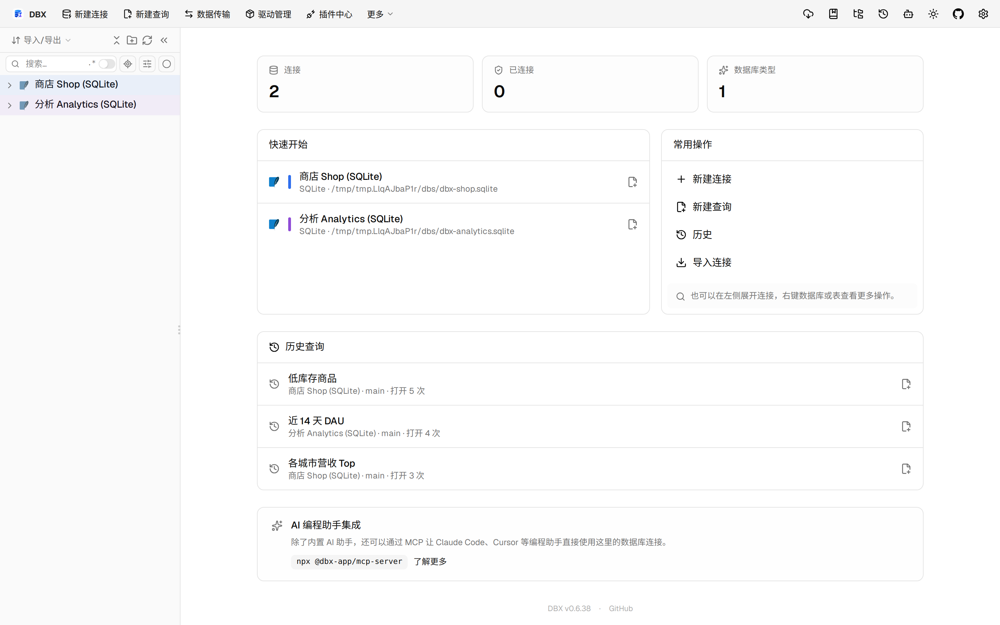

#11545 界面预览
commit 20c346d · 回到 PR · 这个 PR 让 OceanBase Oracle 连接支持 BLOB 有界预览、按需读取原始字节分块，以及大值引用在事务边界和取消时的失效/释放处理；同时还补了按上下文解析表/同义词列元数据的能力。界面层面主要体现在该驱动下大 LOB 查询结果会先显示截断预览，并能继续取全文。

连接页查看大值预览入口 · 打开应用后的首页，查看现有连接与历史入口
 说明当前沙盒无法演示 OceanBase LOB · 当前沙盒仅有 SQLite 连接，展示无法进入 OceanBase Oracle 大值预览的场景
说明当前沙盒无法演示 OceanBase LOB · 当前沙盒仅有 SQLite 连接，展示无法进入 OceanBase Oracle 大值预览的场景